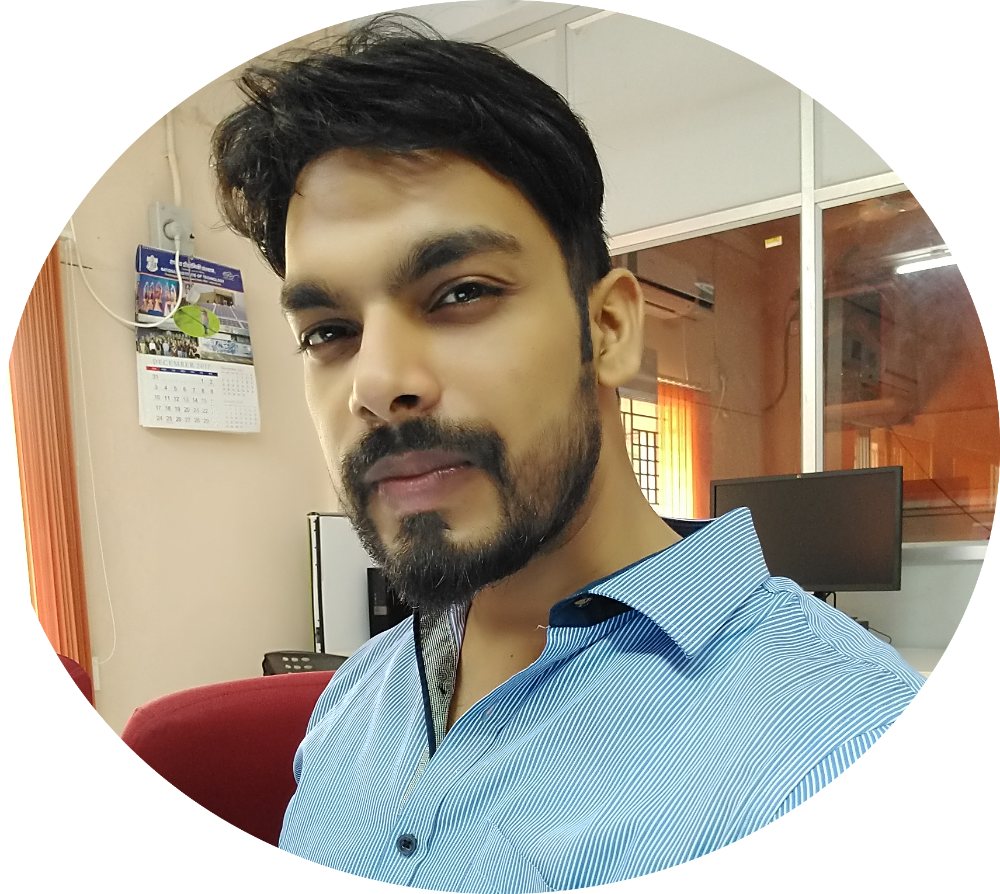

Abhishek Aich
I am a Researcher at NEC Laboratories, America . Before this, I received my Ph.D. from University of California, Riverside in 2023, under the supervision of Prof. Amit K. Roy-Chowdhury . NEC Laboratories, America (2022), Mitsubishi Electric Research Laboratories (2021) and UII, America (2020).
/
Research opportunities: I am happy to collaborate on projects involving (not limited to) vision-language models, adversarial attacks, and dynamic networks. If you are interested, please send me an email.

Publications/Submissions (*: joint first authors):
Progressive Token Length Scaling in Transformer Encoders for Efficient Universal Segmentation
Abhishek Aich ,
Yumin Suh ,
Samuel Schulter ,
Manmohan Chandraker
arXiv , 2024
[Code ]
Efficient Transformer Encoders for Mask2Former-style models
Manyi Yao ,
Abhishek Aich ,
Yumin Suh ,
Amit K. Roy-Chowdhury ,
Christian R. Shelton ,
Manmohan Chandraker
arXiv , 2024
[Code ]
Improving the Efficiency-Accuracy Tradeoff of DETR-Style Models in Practice
Yumin Suh ,
Dongwan Kim ,
Abhishek Aich ,
Samuel Schulter ,
Jong-Chyi Su ,
Bohyung Han ,
Manmohan Chandraker
CVPR Workshop (Efficient Deep Learning for Computer Vision) , 2024
Efficient Controllable Multi-Task Architectures
Abhishek Aich ,
Samuel Schulter ,
Amit K. Roy-Chowdhury ,
Manmohan Chandraker ,
Yumin Suh
IEEE/CVF ICCV , 2023
GAMA: Generative Adversarial Multi-Object Scene Attacks
Abhishek Aich *,
Calvin-Khang Ta *,
Akash Gupta ,
Chengyu Song ,
Srikanth Krishnamurthy ,
M. Salman Asif ,
Amit K. Roy-Chowdhury
NeurIPS , 2022
[Project page ]
[Code ]
Cross-Domain Video Anomaly Detection without Target Domain Adaptation
Abhishek Aich ,
Kuan-Chuan Peng ,
Amit K. Roy-Chowdhury
IEEE/CVF WACV , 2023
Leveraging Local Patch Differences in Multi-Object Scenes for Generative Adversarial Attacks
Abhishek Aich ,
Shasha Li ,
Chengyu Song ,
M. Salman Asif ,
Srikanth Krishnamurthy ,
Amit K. Roy-Chowdhury
IEEE/CVF WACV , 2023
Poisson2Sparse: Self-Supervised Poisson Denoising From a Single Image
Calvin-Khang Ta *,
Abhishek Aich *,
Akash Gupta *,
Amit K. Roy-Chowdhury
MICCAI , 2022
[Code ]
Adversarial Attacks on Black Box Video Classifiers: Leveraging the Power of Geometric Transformations
Shasha Li *,
Abhishek Aich *,
Shitong Zhu ,
M. Salman Asif ,
Chengyu Song ,
Amit K. Roy-Chowdhury ,
Srikanth Krishnamurthy
NeurIPS , 2021
[Project page ]
[Code ]
Spatio-Temporal Representation Factorization for Video-based Person Re-Identification
Abhishek Aich ,
Meng Zheng ,
Srikrishna Karanam ,
Terrence Chen ,
Amit K. Roy-Chowdhury ,
Ziyan Wu
IEEE/CVF ICCV , 2021
[Project page ]
ALANET: Adaptive Latent Attention Network for Joint Video Deblurring and Interpolation
Akash Gupta ,
Abhishek Aich ,
Amit K. Roy-Chowdhury
ACM MM , 2020
[Project page ]
[Code ]
Non-Adversarial Video Synthesis with Learned Priors
Abhishek Aich *,
Akash Gupta *,
Rameswar Panda ,
Rakib Hyder ,
M. Salman Asif ,
Amit K. Roy-Chowdhury
IEEE/CVF CVPR , 2020
[Project page ]
[Code ]
Deep Quantized Representation for Enhanced Reconstruction
Abhishek Aich , Kevin Rodriguez, G. Venugopala Reddy, Amit K. Roy-Chowdhury ISBI Workshop , 2020
[Code ]
Selected Older Publications: